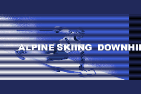

ESPN International Winter Sports 2002 (USA)
EEPROM 4K gbakit Built-In Debug Menu Patch 💾 MultiBoot 🎮 4P Link
Cartridge Identity
- Game Code
AWIE(FamilyAWI)- Header Title
WINTERSPORTS- Maker / Revision
A4/ rev0- ROM Size
- 4.0 MiB (4,194,304 B)
- Save Media
EEPROM 4K- SHA-256
843b4ea112c13399eef27c388a20fafb00557509d510b1b53327c514db1d3f47- Engine / SDK Group
comm-002(145 families)
Screenshots

Debug Menu Re-Enablement Patch (.ips)
Download AWIE-debug.ips (17 B IPS / 4 B delta)
- Hook Mechanism
scene_struct_ptr_swap· Replace initial Konami scene struct pointer at 0x000448 (0x082fe93c bumper -> 0x0830436c sys_mode) to boot directly into MODE SELECT with developer font overlay- IPS SHA-256
2c32b74dce435dfe95f86b5df56d321d5a1cb168d1ba77fae083f3835fb26dba
gbakit patch apply AWIE-debug.ips original.gba patched-debug.gba

Link Cable & Multiplayer Communications
This title contains detected communication capabilities: 💾 MultiBoot 🎮 4P Link.
Detailed protocol specifications, SIO registers, Joybus commands, and MultiBoot sequences are documented in the Link & Multiplayer Reference.
- Multi-Player SIO (4P)
- 16-bit ring network · SIOCNT (
0x04000128) literals:0x004cec,0x0051a8,0x005660· SIODATA32/SIOMULTI0 (0x04000120) literals:0x007a18,0x007a7c,0x007ae8 - Single-Cart MultiBoot
- Single-Cartridge MultiBoot (Download Play) client/server handler · Thumb SWI 0x25 (
0xDF25):0x06a64a,0x0b1244,0x27f3c4,0x28d474
Battery Save Support in gbakit
Built-in definition (AWIE)
gbakit save verify AWIE save.sav
gbakit save decode AWIE save.sav
gbakit save fix AWIE damaged.sav -o repaired.savROM Assets, Compression & Audio
- BIOS Compression
- LZ77 (
0x10): 281 streams · RLE (0x30): 0 streams - ROM Pointer Tables
- 45 tables (0 pointing to validated compressed streams)
- SDK Backup Tags
EEPROM_V122
Text, Fonts & Scene Data
- Primary Text Encoding
- Compressed / custom-encoded text (
5ASCII strings ·13Shift-JIS runs) - Font & VWF Indicators
- VWF Width Table 1bpp Font · BIOS SWIs: BitUnPack
0x10:12· LZ770x11/12:34· Huffman0x13:7· RLE0x14/15:7 - Scene & Packaging
22ROM pointer tables (≥32 entries,1≥200) ·2relativeu32TOCs ·221OAM metasprite hits
Hardware MMIO Subsystems
ppu_display0x8008d30,0x800b0d4,0x805e57c,0x805e610
Regional Variants & Revisions (Family AWI)
- ESPN International Winter Sports (Europe) (
AWIP, 4 MiB) - Hyper Sports 2002 Winter (Japan) (
AWIJ, 4 MiB)